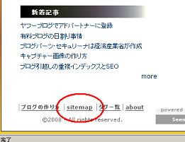

キャプチャー画像をブログへ貼付方法
以前の記事でキャプチャー画像の作り方について書いていたのですが、今度はそのキャプチャーした画像の加工方法について調べてみたいと思います。
さらに、画像をブログへ貼付する際の html タグは <img src=ほにゃらら というタグでの記入になりますが、画像の alt 属性の記入による SEO 効果についても考え中です。
キャプチャー画像の加工方法
キャプチャー画像の作り方は、パソコン上にあるキーボードの「 Print Screen 」ボタンを押してスクリーンショットすればいいのでわりと簡単なんです。
そのキャプチャーした画像はペイントなどで大きさやを変更したり、文字を入力して加工することになると思います。
例えば、当ブログのサイトマップの位置をキャプチャー画像でお知らせしたいと考えたとき、こんな感じで画像を作成することになるかと思います。

実際の加工方法としては、範囲を選択しての切り取りや縮小、文字を入力したり、丸で囲んでみたりするとぶなんな感じにできあがります。
ブログの記事中に貼り付ける場合など、画像が大きすぎたら入りきらなくなるので、横幅が収まるぐらいの大きさに切り取るなり、縮小するなりするといいと思います。
シーサーブログでは、デフォルトのテンプレートだと、横幅を 300px 前後にするとぶなんなのではないかなと思います。
- 切り取りや縮小で大きさ変更
- 丸で囲んだりの文字入力
- 間違えたら元に戻すで再加工
ポイントとしては、画像を切り抜いたあとの新規ページを立ち上げる際、横幅と縦幅を小さめに設定してから貼り付けるといいようです。動画も貼付しておきます。
IEのブラウザで見てみると、たまにブログの右サイドバーが下の方へずれてしまっていることがありますが、だいたいは、記事中に大きな画像を貼り付けていることが原因だと思います。
なるべく、小さめの画像サイズにすることをおすすめします。
ブログへ画像を貼付する際のhtmlとCSS
次に、ブログへ画像を貼付する際の html と CSS ですが、ブログへアップロードしたあとに、その画像をクリックすると自動的に html タグが入力されるブログサービスが多いようです。
でも、自分でブログへ画像を貼付したい場合の html タグはこんな感じにするといいと思います。
<img src="http://アップロードした画像のURL" alt="" width="" height="" border="0" />
ここで、ブログの SEO 対策として若干関係してくるのは、alt="" の部分ですけど、これは画像が表示されない場合に出てくる説明文のことです。
ブラウザの設定で画像の表示をオフにしたりしていると、この alt="" の部分に記入した説明文が表示されることになるので、なるべくなら記入しておくと SEO 的にもいいと思います。
例えば、上の画像の場合だとこんな感じで記入しています。
<img src="/image/image-bmp.png" width="261" height="201" border="0" alt="サイトマップの位置のキャプチャー画像" />
たまに、アフィリエイトのバナー広告に縦横 1px のちっちゃい画像が挿入されていることがありますが、これは画像が読み込まれる回数によって、バナー広告の表示回数を調べるためのものみたいです。
そういう場合の alt 属性は何も記入する必要はないようです。
width と height の値は、画像の url にアクセスして実際に画像を表示し、画像上の「右クリック - プロパティ」で確認することができます。
最後に border の値ですが、画像をリンクさせている場合、枠線が青く表示されてしまうこともありますが、スタイルシートで border の値を 0 に設定しておくと枠線は表示されないです。
img {border:0px;}
けれども、画像の枠線を黒で囲みたいっていう場合には、border の箇所に、スタイル属性を追加しておくと便利です。
style="border: solid 1px #000000;"
例えば、上の画像を黒い枠線付きにしたいと思った場合はこんな html になります。
<img src="/image/image-bmp.png" width="261" height="201" style="border: solid 1px #000000;" alt="サイトマップの位置のキャプチャー画像" />
そうすると、黒い枠線付きでこんな感じで表示されることになります。
#000000 の箇所で枠線の色彩を、px の値で枠線の太さを調整することが可能です。
- キャプチャー動画の作り方
キャプチャー動画の作り方は画像の場合と比べて、若干難しいところがありますが、言葉では伝えにくいメッセージは動画で伝えるのが一番かと思います。ネット上では動画をキャプチャーする無料ツールがいくつか公開さ... - 無料画像のブログで使い方
ブログの画像を作るには、やっぱデジカメで写真をとってアップロードするっていうのが一番簡単かと思いますが、たいていの人は初心者というのが普通なんで、自分でとっても、逆光とかになってきたない画像しかとれな... - ブログにグラデーションな背景画像の作り方
ブログの背景画像をグラデーションなふいんきにしたい場合は、無料ソフトツールなどを使用しながらグラデーション素材を作成し、ＣＳＳで背景画像として組み込めば簡単にカスタマイズできるのではないかなと思います...